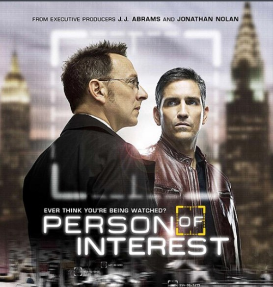
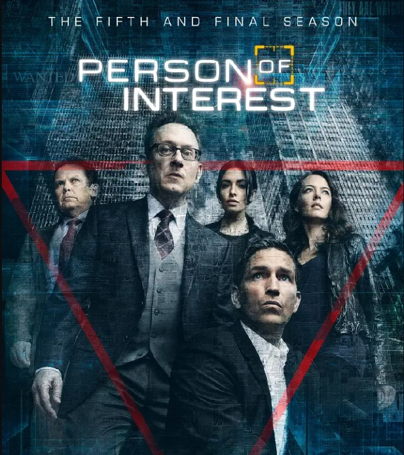
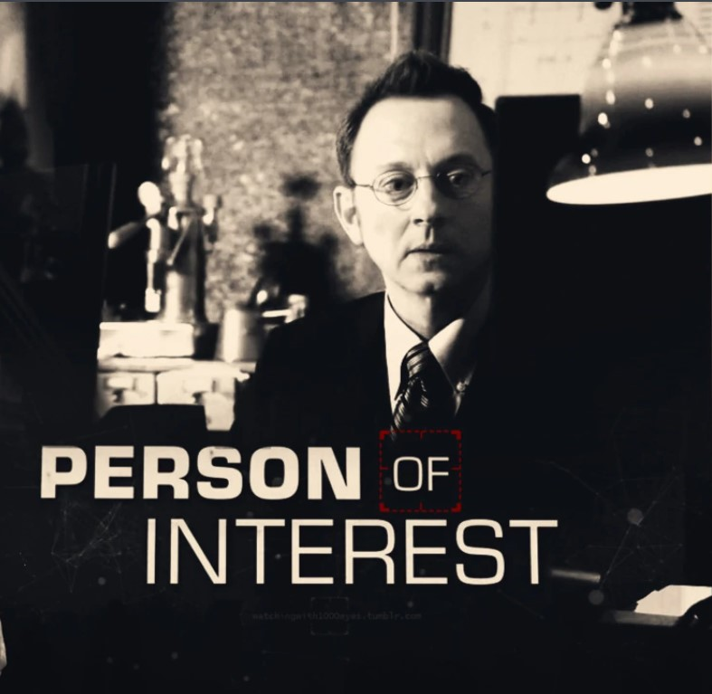

|  |  |  |
《疑犯追踪》（Person of Interest / POI）是美国CBS电视台制作，由乔纳森·诺兰与J·J·艾布拉姆斯共同打造剧情架构，詹姆斯·卡维泽、迈克尔·爱默生、塔拉吉·P·汉森、萨拉·夏希、凯文·查普曼、艾米·阿克等主演的犯罪电视系列剧。 该剧讲述了一位推定死亡的前CIA特工与一位神秘的亿万富翁联合起来，运用一套独特的办法制止犯罪的故事。软件天才芬奇（Finch）发明了一个程序，通过观测已有的模式来识别有可能进行暴力犯罪的罪犯，他雇用了一位被推定死亡的前美国空军特种部队队员和前CIA里瑟（Reese），二人使用国家级的监测技术，加以Reese的专业技能和Finch的无限财富，开始“法外执法”，力图在犯罪发生前就对其加以阻止。Reese的行动引起了纽约市警察局的注意，其中包括警探Carter和Fusco。 该剧于2011年9月22日首播播出第一季。2012年9月28日起播出第二季。2013年9月24日起播出第三季。第四季于2014年9月24日开播。第五季定于2016年5月3日晚九点在CBS电视台开播，本季为该剧的最终季，共13集。
经典台词：
1、When you find that one person who connects you to the world,
you become someone different,someone better.
When that person is taken from you...
what do you become then?
当你找到你在这个世上的羁绊
你就变了
变得更好
而当这个人从你身边被夺走
那你又会变得怎样？
2、can you hear me?
3、我没有重要的东西… 在我…找到你之前
4、每个人都会与某些人相关
如果你生命中有真心在乎的人，你就会明白
她呢?下一个跳出来的号码呢?
你能看着他们的眼睛
告诉他们说：他们无关紧要吗? ----奈森